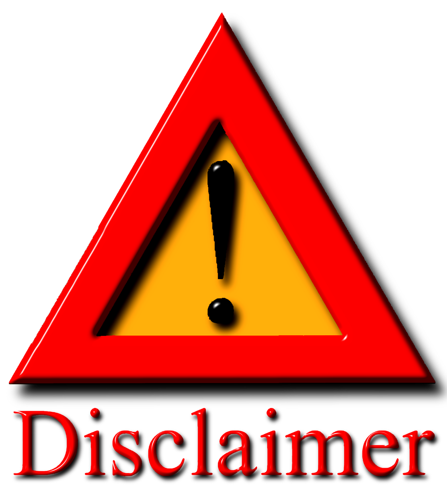

<!-- Back button -->
<ion-header>
    <ion-toolbar>
      <ion-buttons slot="start">
        <ion-back-button defaultHref="user-survey"></ion-back-button>
      </ion-buttons>
    </ion-toolbar>
  </ion-header>

<ion-header>
  <ion-toolbar>
    <ion-title>Disclaimer</ion-title>
  </ion-toolbar>
</ion-header>

<ion-content padding>

    
    <ion-button shape="round" fill="outline" size="large" href="/camera-control">Continue</ion-button>

</ion-content>
